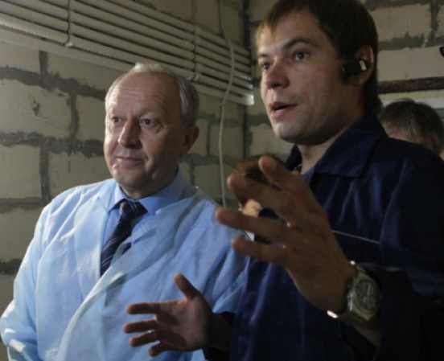

Новости
Опубликовано 14.02.2019

В ТОСЭР «Петровск» в Саратовской области будут выращивать биошампиньоны
Опубликовано 14.02.2019

Губернатор высоко оценил грибной комбинат в Петровске
Опубликовано 14.02.2019

Губернатору Радаеву рассказали о пользе петровских грибов
Опубликовано 14.02.2019

В Петровске открылся комбинат по производству грибов